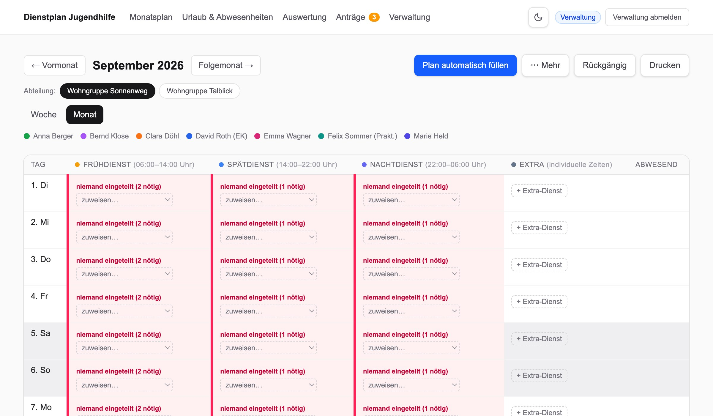
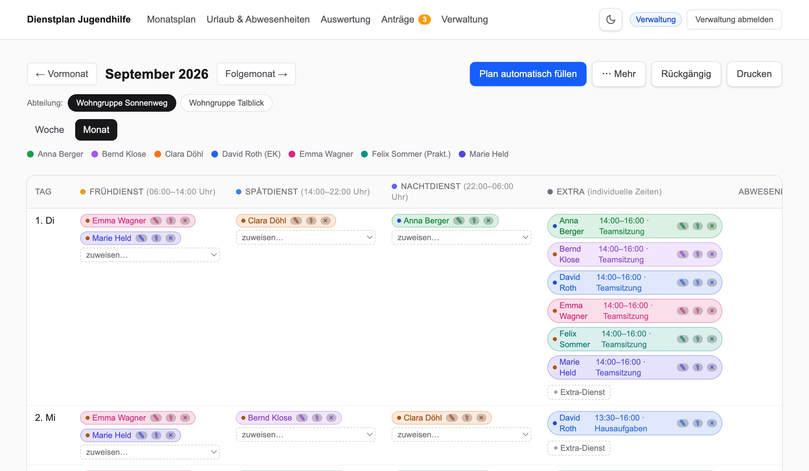
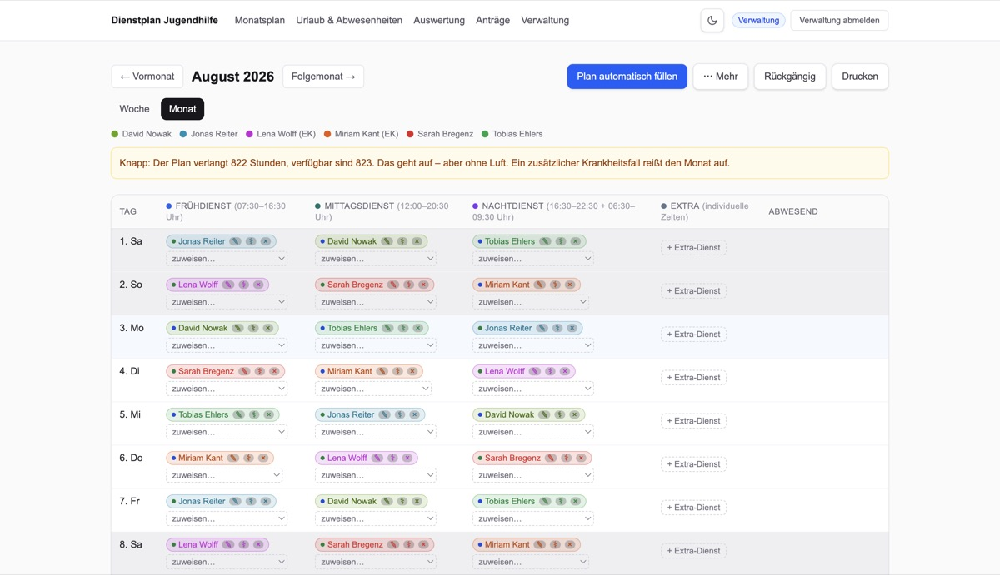
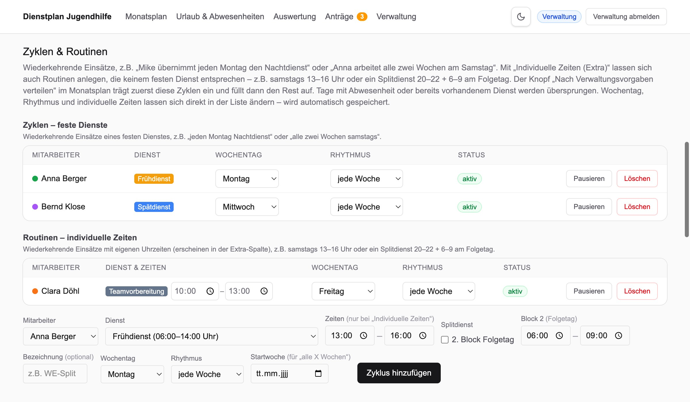
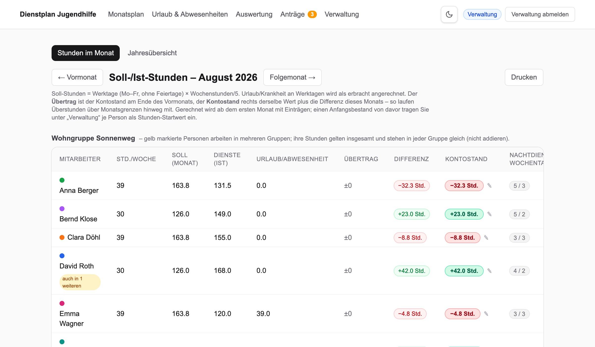
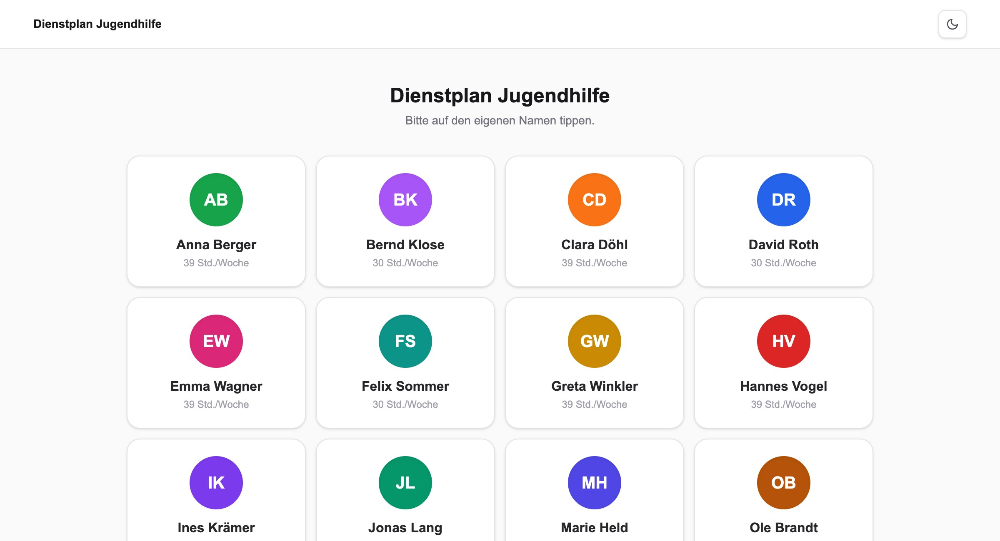
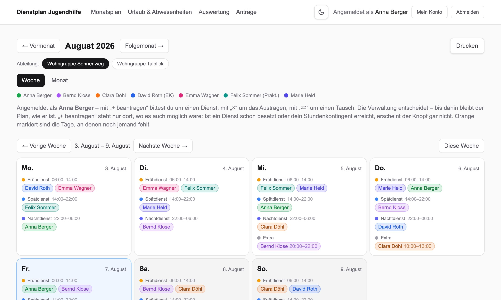
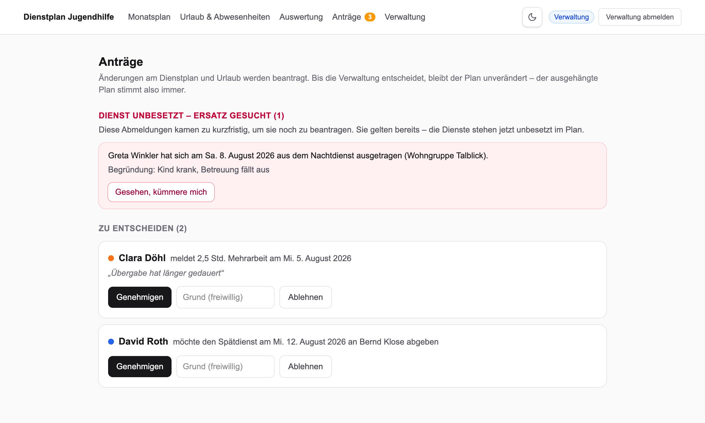
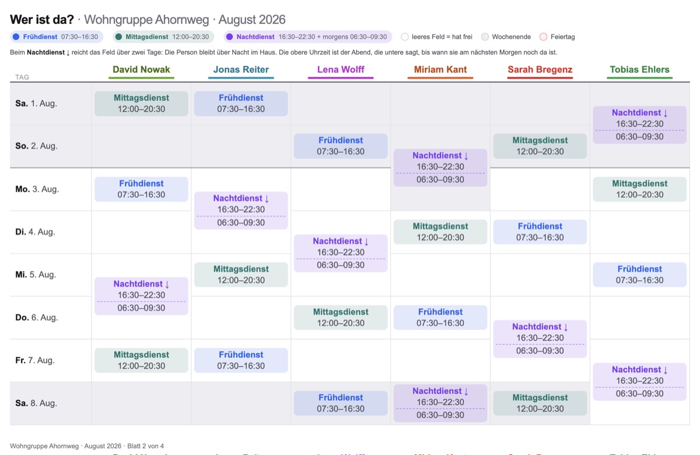
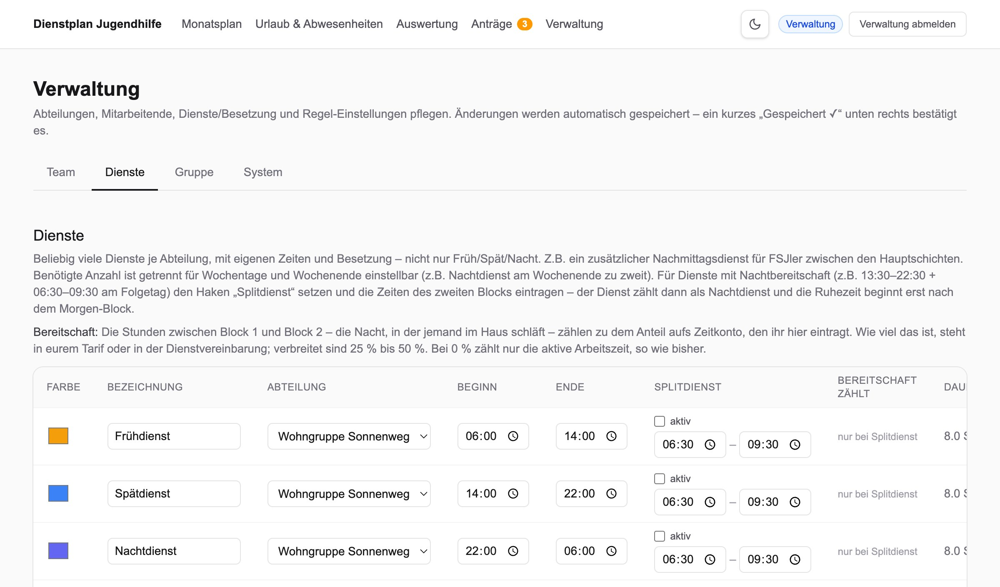

Schichtplanung, die am Brett verständlich ist.
Der Monatsplan füllt sich mit einem Klick, das Arbeitszeitgesetz läuft mit, Stunden und Urlaub rechnen sich selbst. 179 € einmalig statt Monat für Monat — und kein einziges Datum verlässt euer Haus. Gebaut für Wohngruppen der Jugendhilfe, von jemandem, der selbst darin arbeitet.
Knapp: Der Plan verlangt 822 Stunden, verfügbar sind 823. Das geht auf — aber ohne Luft. Ein zusätzlicher Krankheitsfall reißt den Monat auf.
| Tag | Frühdienst (07:00–16:30) | Mittagsdienst (12:00–20:30) | Nachtdienst (16:30–22:30 + 06:30–09:30) |
|---|
- Der Nachtdienst bleibt ein Eintrag. Er steht am Tag, an dem er beginnt — nichts wird über zwei Tage zerrissen. Die Stunden nach Mitternacht rechnet die App trotzdem richtig, und auf dem Aushang läuft der Block mit Pfeil in den Folgetag.
- Eingeteilt wird nach Stunden. Jede Person hat ihr Monats-Soll aus den Vertragsstunden. Die automatische Verteilung nimmt zuerst, wer am wenigsten davon erfüllt hat — und der Punkt am Namen zeigt es jederzeit: grün = noch Luft, blau = im Soll, rot = darüber.
- Lücken rufen laut. Ein Dienst ohne Menschen steht rot im Plan, Unterbesetzung gelb — und die Warnleiste oben sagt ehrlich, wenn der Monat rechnerisch nicht aufgeht.
Nachgebaut mit den Farben und Abständen der Anwendung. Echte Aufnahmen weiter unten.
In neun Worten
Warum dieses Programm — zum Anklicken.
Was sie kann
Drei Dinge, die andere Dienstplaner nicht können.
Schichten laufen über Mitternacht. Nachtbereitschaft ist keine normale Arbeitszeit. Der fertige Plan muss ans Brett und dort von allen verstanden werden.
Planen
- Beliebig viele Dienstarten je Gruppe, minutengenau.
- Splitdienst über Nacht mit zwei Blöcken und Bereitschaft dazwischen.
- Monat und Woche im Umschalter, auch über den Monatswechsel.
- Automatisch füllen — verteilt fair nach Stunden-Soll und markiert, wo es klemmt.
- Zyklen und Routinen für wiederkehrende Dienste.
- Wunschfrei je Person, beim Verteilen berücksichtigt.
- Auslastung je Person — wer noch Stunden offen hat, steht beim Zuweisen oben und ist am Namen farbig markiert.
Prüfen
- Ruhezeit zwischen zwei Diensten (§ 5 ArbZG).
- Arbeitstage am Stück mit Obergrenze (§ 9 ArbZG).
- Nachtdienst-Kontingente je Person, Wochentag und Wochenende getrennt.
- Feiertage aller 16 Bundesländer — ein Feiertag zählt wie ein Sonntag.
- Auslastung am Namen — beim Zuweisen farbig sichtbar.
- Engpass-Warnung, wenn das Personal rechnerisch nicht reicht.
- Abdeckung über den Tag als Zeitleiste.
Abrechnen & Aushängen
- Zeitkonto mit Übertrag in den Folgemonat.
- Nachtbereitschaft anteilig — 0 bis 100 %, nach eurem Tarif.
- Urlaubskonto mit Resttagen und Vorjahres-Übertrag.
- Aushang fürs Brett, mehrseitig, mit Legende.
- PDF und Excel in derselben Gestalt wie der Aushang.
- Rückgängig für jede Änderung.
Tages-Abdeckung — wer ist wann im Haus?
Unter jedem Tag zeichnet die App diese Leiste: je höher der Balken, desto mehr Menschen sind zu dieser Uhrzeit da — von 0 bis 24 Uhr, halbstundengenau, Splitdienste samt Morgenblock mitgerechnet. Nachts einer, nachmittags zur Hausaufgabenzeit drei. Sackt die Leiste auf null, klafft eine Lücke — und das sieht man hier, bevor es abends jemand im Flur merkt.
Im Beispiel: eine Person durch die Nacht, ab morgens zwei, über Mittag und zur Hausaufgabenzeit drei, zum Abend hin wieder weniger.
Für die Leitung — so fängt es an
Einmal einstellen. Dann steht der Monat in Sekunden.
Wir gehen es mit euch durch, vom ersten Start bis zum fertigen Plan. Dienstplanung kostet nicht beim Ausfüllen die Zeit, sondern beim Immer-wieder-neu-Erfinden — deshalb steckt die Arbeit hier in der Einrichtung, einmal, und danach macht der Monat sich fast von selbst:
1 · Abteilung anlegen
Der Assistent beim ersten Start fragt zwei Dinge: ein Passwort für die Leitung und den Namen eurer ersten Gruppe. Früh-, Spät- und Nachtdienst stehen sofort als Vorschlag bereit — Zeiten und Besetzung passt ihr an eure Wirklichkeit an, Team eintragen, fertig. Jede weitere Abteilung ist ein Klick. Gespeichert wird automatisch, einen Speichern-Knopf gibt es nicht.
2 · Muster hinterlegen
Zyklen („Anna jeden Montag Früh"), Routinen mit eigenen Zeiten („freitags 10–13 Teamvorbereitung"), Gruppentermine (Teamsitzung wöchentlich, Supervision alle vier Wochen) und die Hot-Phasen eurer Tagesstruktur.
3 · Jeden Monat: ein Klick
„Plan automatisch füllen → Nach Verwaltungsvorgaben" trägt erst die Zyklen ein, füllt dann fair nach Stunden-Soll, besetzt Hot-Phasen mit und überspringt, wer im Urlaub ist. Bestehende Einträge bleiben unangetastet.
Gemessen, nicht behauptet: 1,1 Sekunden für den ganzen Monat



Das Ergebnis
Der Plan – für beliebig viele Gruppen.
Jede Gruppe hat ihren eigenen Plan mit eigenen Diensten und Zeiten. Jeder Name trägt seine Farbe, kleine Punkte zeigen die Auslastung, und in der Extra-Spalte stehen Einsätze mit frei gezogenen Zeiten — hier ein Zooausflug 13:00–16:30.
Und wenn die Stunden nicht reichen, sagt die App das offen — im Bild die Warnung: „Das geht auf, aber ohne Luft."

4 · Feinschliff, wo nötig
Die App schlägt vor. Ihr entscheidet.
Das Zuweisen-Menü an jeder Lücke sortiert die Vorschläge: ★ zuerst, wer noch Stunden offen hat. Wer gegen eine Regel verstoßen würde, bekommt ein ⚠ mit Begründung — die Verwaltung darf trotzdem, sie wird nur nie blind hineinlaufen. Und jeder Schritt ist mit Strg+Z rückholbar.
Im Hintergrund laufen die Prüfungen des Arbeitszeitgesetzes mit (Ruhezeit, Tage am Stück, Nachtdienst-Kontingente), die Zeitkonten und der Urlaub rechnen sich selbst, und am Ende sind es zwei Klicks: Aushang drucken, fertig.

5 · Auslastung
Sie sehen sofort, wer noch Stunden frei hat.
Die schwierigste Frage beim Planen ist nicht „wer kann?", sondern „wer muss noch?" — wer hinter seinem Soll liegt und wer schon darüber. Genau das rechnet die Anwendung mit: Jede Person hat ihr Monats-Soll aus den Vertragsstunden, und der farbige Punkt am Namen zeigt den Stand jederzeit — grün: noch Luft, blau: im Soll, rot: darüber.
Beim Zuweisen sortiert die Anwendung danach: ★ steht bei denen, die noch Stunden offen haben. Das automatische Füllen tut dasselbe — deshalb heißt es „fair verteilen": nicht reihum, sondern nach Soll. Und wer in zwei Gruppen arbeitet, wird einmal gezählt, nicht doppelt.
Für das Team
Und so erleben es die Mitarbeitenden.
Der Plan steht — jetzt die andere Seite. Dieselbe Beispiel-Einrichtung, aus Sicht derer, die den Plan jeden Tag benutzen: anmelden, die eigene Woche sehen, beantragen statt bitten. Auch das entlastet die Leitung: Wünsche kommen nicht mehr per Zettel und Zuruf, sondern an einer Stelle, wo sie niemand vergisst.

Schritt 1
Anmelden – ohne Hürde.
Jede Person tippt ihre Kachel an — auf Wunsch mit eigenem Passwort. Die Verwaltung hat einen eigenen, passwortgeschützten Zugang. Kein Konto bei einem Anbieter, keine E-Mail-Adresse nötig.

Schritt 2
Jede und jeder sieht die eigene Woche.
Mitarbeitende melden sich an und sehen sofort, wer wann arbeitet. Eintragen, Austragen, Tauschen — alles geht direkt am Plan, wird aber zum Antrag: Bis die Verwaltung entscheidet, bleibt der Plan, wie er ist. Der Aushang stimmt also immer.

Schritt 3
Anträge – und der Ernstfall.
Mehrstunden, Urlaub, Tausch — die Verwaltung entscheidet mit einem Klick und sieht vorher, was eine Genehmigung auslösen würde.
Wer sich kurz vor Dienstbeginn abmeldet, wartet nicht auf eine Genehmigung: Die Abmeldung gilt sofort, der Dienst steht sichtbar unbesetzt im Plan, und die Verwaltung bekommt die rote Meldung „Dienst unbesetzt — Ersatz gesucht".
Schritt 4
Stunden und Konten rechnen sich selbst.
Soll und Ist je Person, Urlaub zählt als erbracht, das Zeitkonto läuft über Monatsgrenzen weiter. Wer in mehreren Gruppen arbeitet — etwa 60 % hier, 40 % dort — wird einmal gezählt, nicht doppelt.
Korrekturen (ausbezahlte Stunden, alte Überträge) trägt die Verwaltung mit Begründung ein — nichts wird überschrieben, alles bleibt nachvollziehbar.
Und der fertige Plan? Der kommt als Aushang ans Brett — und was sich sonst noch alles einstellen lässt, steht in der Verwaltung. Beides direkt hier darunter.

Der Aushang
Der Plan fürs Brett.
In einer Wohngruppe hängt der Plan am Brett und wird von allen gelesen — auch von Kindern, die wissen wollen, wer sie abends ins Bett bringt.
Deshalb ist er eigens dafür gebaut: gleiche Zeilenhöhen, Feiertage farbig, und der Nachtdienst als ein Block über zwei Tage mit Pfeil nach unten. Konflikthinweise der Verwaltung erscheinen nie darauf.

Einstellungen
Alles einstellbar, nichts vorgegeben.
Kein Anbieter weiß, wie eure Gruppe arbeitet. Dienstarten, Zeiten, Besetzung und Regeln legt ihr selbst fest — gespeichert wird sofort, ohne Speichern-Knopf.
Im Bild das Feld, das kaum ein anderes Programm hat: wie viel Prozent der Nachtbereitschaft aufs Zeitkonto zählen. Was bei euch gilt, steht im Tarif — nicht in unserer Voreinstellung.
Für das ganze Haus
Ein Rechner trägt den Plan. Alle anderen schauen hinein.
Ein Dienstplan, den nur eine Person öffnen kann, ist ein Zettel mit Extraschritten. Deshalb kann die Installation im Haus freigegeben werden: Der Rechner im Büro trägt die Daten, alle anderen Arbeitsplätze und Diensthandys rufen den Plan über das hauseigene Netz auf — im Browser, ohne Installation.
Ehrlich gesagt: noch im Probelauf (Beta)
Das Hausnetz ist fertig gebaut und läuft — es hat aber noch nicht genug fremde Häuser gesehen, um es ohne dieses Wort zu verkaufen. Gekauft wird hier vorrangig die Anwendung selbst, die vollständig auf einem Rechner arbeitet. Das Hausnetz schaltet ihr dazu, sobald ihr mögt — und weil alle Updates inklusive sind, bekommt jedes Haus den fertigen Stand automatisch, ohne Aufpreis.
Auch im Hausnetz gilt: kein Konto bei uns, kein Server bei uns, keine Verbindung ins Internet. Wer das nicht braucht, lässt den Haken aus — dann läuft alles wie bisher auf einem Rechner.
Der Vergleich
Warum nicht Excel — oder ein Cloud-Dienstplaner?
| Papier & Excel | Cloud-Dienstplaner | Dienstplan | |
|---|---|---|---|
| Kosten | keine | monatlich, meist je Person | keine, ohne Nutzergrenze |
| Nach fünf Jahren | keine | läuft weiter, Monat für Monat | immer noch keine |
| Wenn ihr aufhört zu zahlen | — | Zugriff endet, auch auf alte Pläne | es gibt nichts zu zahlen |
| Wo die Daten liegen | bei euch | beim Anbieter | bei euch, auf eurem Rechner |
| Ohne Internet | ja | nein | ja, vollständig |
| Mehrere Arbeitsplätze | eine Datei, die herumgereicht wird | ja, über den Anbieter | ja, über das eigene Hausnetz |
| Arbeitszeitregeln | selbst im Kopf behalten | meist vorhanden | laufen mit, mit Begründung |
| Nachtbereitschaft | von Hand nachrechnen | selten vorgesehen | Splitdienst mit einstellbarem Anteil |
| Aushang | von Hand formatieren | Ausdruck der Bildschirmansicht | eigens gebaut, auch für Kinder lesbar |
| Wenn etwas schiefgeht | Strg+Z, wenn ihr Glück habt | je nach Anbieter | alles protokolliert und rücknehmbar |
| Betreuung | keine | Hotline, oft extra zu zahlen | keine zugesagt — Fragen beantworte ich trotzdem |
Die mittlere Spalte beschreibt, was für Cloud-Dienstplaner typisch ist — nicht ein bestimmtes Produkt.
Datenschutz
Nichts verlässt das Haus.
Dienstpläne einer Wohngruppe sind Personaldaten und stehen neben den Namen der Kinder. Deshalb kein Konto, kein Server beim Anbieter, keine Übertragung ins Internet.
Wo die Daten liegen
In einer Datei auf eurem Rechner. Wir bekommen sie nie zu sehen.
Wer sie sehen kann
Nur wer angemeldet ist — mit eigenem Zugang und eigener Rolle. Jede Eintragung wird mit Urheber protokolliert.
Sicherung
Täglich automatisch, die letzten 30 Stände. Wöchentlich zusätzlich als PDF, das jeder Rechner lesen kann.
Datenblatt für eure Datenschutzbeauftragten
Welche Daten verarbeitet werden, wo sie liegen, wie lange sie bleiben und warum kein Auftragsverarbeitungsvertrag nötig ist — auf zwei Seiten, zum Weiterreichen.
Nicht nur Jugendhilfe
Dieselbe Anwendung, auch ohne Kinder-Funktionen.
Schichtdienst gibt es nicht nur in Wohngruppen. Beim ersten Start wählt ihr die Fassung: Jugendhilfe — mit Kindern, Zuteilungen und dem Aushang für die Gruppe — oder Betrieb für Pflege, Gastronomie, Handwerk und Produktion: Gruppen heißen dann Abteilungen, die Kinder-Funktionen sind ausgeblendet, und alles Übrige bleibt gleich — Dienste, Anträge, Tausch, Zeitkonten, Arbeitszeitprüfung, Hausnetz. Ein Produkt, ein Preis, eure Wahl. Mehr zur Betriebs-Fassung.
Was sie kostet
179 € einmal. Dann gehört sie dem Haus.
Ein Preis, einmal bezahlt — pro Einrichtung, egal wie viele Gruppen, Mitarbeitende oder Arbeitsplätze. Kein Abo, keine Gebühr je Person, keine laufenden Kosten. Die Anwendung läuft auf euren Rechnern und braucht keinen Server bei mir; es gibt nichts, das jeden Monat Geld kosten könnte, und nichts, das jemand abschalten kann.
Entscheiden könnt ihr hier. Diese Seite zeigt alles: echte Aufnahmen aus jeder Ansicht, den Rundgang vom Anmelden bis zum Aushang, die gemessene Füllzeit, den vollständigen Funktionsumfang. Was ihr seht, ist, was ihr bekommt — es gibt keine größere Fassung und kein Kleingedrucktes.
Zur Einordnung: Cloud-Dienstplaner kosten je Mitarbeitendem und Monat. Ein Haus mit 20 Mitarbeitenden zahlt dort mehrere hundert Euro — jedes Jahr, und die Dienstdaten liegen bei einem Anbieter. Hier zahlt ihr einmal, und alles bleibt im Haus.
Gebaut in der Jugendhilfe, im Betrieb erprobt — von Mike Weinert.
- Alle Funktionen — es gibt keine eingeschränkte und keine größere Fassung
- Ohne Grenze bei Mitarbeitenden, Gruppen oder Arbeitsplätzen
- Hausnetz für alle Arbeitsplätze schaltbar (zurzeit Beta, inklusive)
- macOS und Windows, beide dabei
- Alle Updates inklusive — ohne Aufpreis, ohne Ablauf
- Hilfe per E-Mail von dem, der sie gebaut hat
Kleinunternehmer nach § 19 UStG — es wird keine Umsatzsteuer ausgewiesen.
Einrichten ohne fremde Hilfe
Der Assistent beim ersten Start führt durch Passwort, Gruppe und Dienste; die beiliegende Anleitung erklärt Klick für Klick den Rest — Installation, Team, Sicherung. Und wo es doch hakt, hilft eine E-Mail: die Antwort kommt von dem, der die Anwendung gebaut hat.
Für Einrichtungen in der Startphase
Ein Haus, das gerade erst aufbaut, hat andere Sorgen als Software-Rechnungen. Schreibt mir zwei Sätze zu eurer Lage — dann finden wir einen Preis, der passt, notfalls ist es eine Weile keiner. Dafür freue ich mich über Rückmeldungen aus dem Alltag.
Kaufen
Ein Klick. 179 €. Fertig.
Kein Warenkorb, kein Konto, kein Abo. An der Kasse wählt ihr, wie ihr zahlt — Überweisung, SEPA-Lastschrift, Kreditkarte oder PayPal. Unmittelbar danach bekommt ihr per E-Mail den Download für Mac und Windows, euren Lizenzschlüssel und die Rechnung für die Buchhaltung.
Ihr bekommt Anwendung, Lizenzschlüssel und Rechnung per E-Mail – zahlbar per Überweisung mit 14 Tagen Ziel.
1 · Bezahlen
179 € einmalig, für die ganze Einrichtung. Überweisung, Lastschrift, Karte oder PayPal — ihr braucht nirgends ein Konto anzulegen.
2 · Post bekommen
Sofort nach der Zahlung, automatisch: Download-Link für Mac und Windows, euer Lizenzschlüssel und die Rechnung für die Buchhaltung.
3 · Loslegen
Installieren, Schlüssel einmal eintragen, Gruppe anlegen. Danach fragt die Anwendung nie wieder nach — sie prüft den Schlüssel auf eurem Rechner.
Wer stellt die Rechnung?
Den Verkauf wickelt Digistore24 als Wiederverkäufer ab. Die Rechnung kommt von dort, ist ordentlich ausgewiesen und für eure Buchhaltung ganz normal verwendbar — auch bei Zahlung per Überweisung. Braucht ihr etwas Besonderes, eine Bestellnummer, ein Angebot vorab oder eine Sammelrechnung für mehrere Häuser: kontakt@dienstplan-jugendhilfe.de, das mache ich von Hand.
Die drei Fassungen
macOS · Apple-Chip
M1 bis M4 · macOS 11 oder neuer
387 MB · .dmg
macOS · Intel
Ältere Mac-Modelle · macOS 11 oder neuer
439 MB · .dmg
Windows
Windows 10 oder 11 · 64 Bit
329 MB · .exe
Alle drei Fassungen sind gebaut. Auf dem Mac steht unter → „Über diesen Mac", welche ihr braucht: heißt es dort „Chip: Apple M…", ist es die erste.
Beim ersten Start meldet sich das Betriebssystem
Die Anwendung ist noch nicht mit einem kostenpflichtigen Entwicklerzertifikat signiert — deshalb fragt macOS beziehungsweise Windows einmalig nach. Das ist keine Warnung vor Schadsoftware, sondern der Hinweis „Hersteller nicht hinterlegt". Wie ihr weiterkommt, steht Schritt für Schritt in der Installationsanleitung, die beiliegt.
Fragen? Schreibt an kontakt@dienstplan-jugendhilfe.de — ich antworte selbst.
Häufige Fragen
Was Träger meistens wissen wollen.
Ab wann kann man sie herunterladen?
Was kostet sie?
Wie läuft die Bezahlung?
Beim ersten Start kommt eine Sicherheitsmeldung — was tun?
Mac: Erscheint „kann nicht geöffnet werden, da der Entwickler nicht überprüft werden kann" → auf Fertig klicken (nicht „In den Papierkorb") → Systemeinstellungen → Datenschutz & Sicherheit → nach unten scrollen → Dennoch öffnen → mit Passwort oder Touch ID bestätigen. Bei älteren Macs (macOS 14 und davor) genügt: Rechtsklick auf die App → Öffnen → nochmal Öffnen.
Windows: Im blauen Fenster „Der Computer wurde durch Windows geschützt" auf den kleinen Text Weitere Informationen klicken → Trotzdem ausführen.